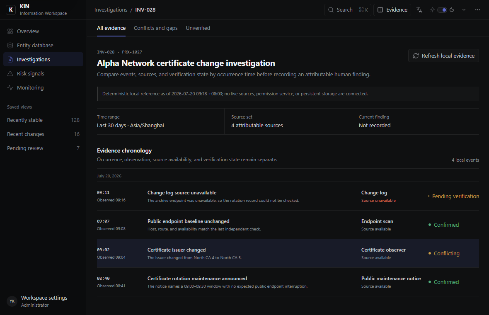

KIN 设计系统
KIN 是面向信息密集型产品的设计系统，适用于信息网站、运营工作台和专业编辑工具。

四类产品任务
KIN 会随任务改变布局。阅读、调查、运营和精确编辑，不该套用同一张仪表盘模板。
把正文、来源、修订记录和相关内容放在同一条阅读路径中。
比较时间顺序、冲突与不确定性，不把它们压成一个分数。
编辑商品时持续显示价格、库存、渠道、审批和历史记录。
让画布成为主角，同时保留工具、选择内容、属性和撤销路径。
一条连续的任务路径
从进入任务到执行操作，依据、结果和仍未解决的限制都应保持清楚。
分析人员从队列或直接链接打开对象调查。
证据与事件顺序。
分析人员记录可追溯的结论，或保持调查不变。
本地样例未连接实时来源、权威权限服务或持久化结论。
当前场景：调查与证据复核
规范与验证
设计规范、交互样例、生成文件和验证记录各自独立，需要时都能继续查看。
没有匹配的页面或规范。